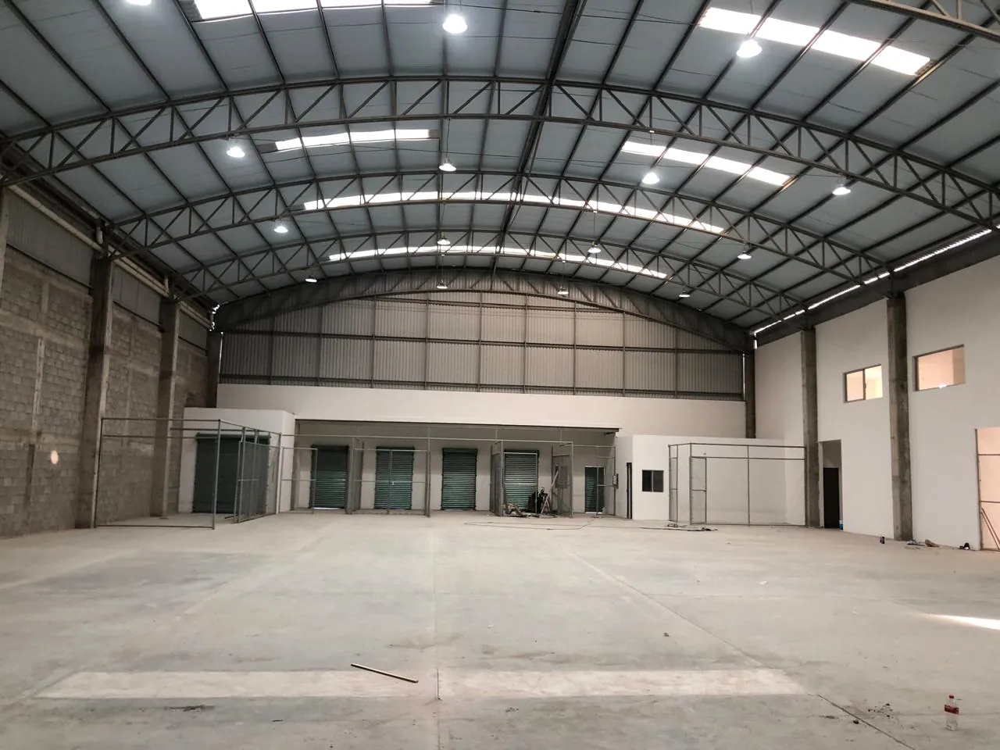

01CINCO MANERAS DE CONSTRUIR
Encuentra
tu siguiente espacio.
Más de 60 proyectos respaldan nuestra trayectoria.
Este portafolio se está documentando.
 REFERENCIA VISUAL
REFERENCIA VISUAL01
Locales comerciales
Espacios pensados para recibir clientes, facilitar la operación y acompañar el crecimiento de cada negocio.
05 FICHAS PARA EXPLORARPORTAFOLIO PROJECTCONS
02
Casas residenciales
Diseño y construcción de viviendas que combinan funcionalidad, identidad y una relación cuidadosa con su entorno.
06 FICHAS PARA EXPLORAR
PORTAFOLIO PROJECTCONS03
Bodegas
Espacios para almacenamiento y operación, con una distribución adecuada a las necesidades de cada actividad.
02 FICHAS PARA EXPLORAR REFERENCIA VISUAL
REFERENCIA VISUAL04
Casas INFONAVIT
Proyectos habitacionales enfocados en las necesidades de cada familia. Consulta el alcance de nuestros servicios y las condiciones aplicables a tu caso.
04 FICHAS PARA EXPLORAR REFERENCIA VISUAL
REFERENCIA VISUAL05
Casas de interés social
Viviendas con distribución eficiente, espacios funcionales y soluciones adaptadas a la vida cotidiana.
04 FICHAS PARA EXPLORAREL SIGUIENTE ESPACIO PUEDE SER EL TUYO